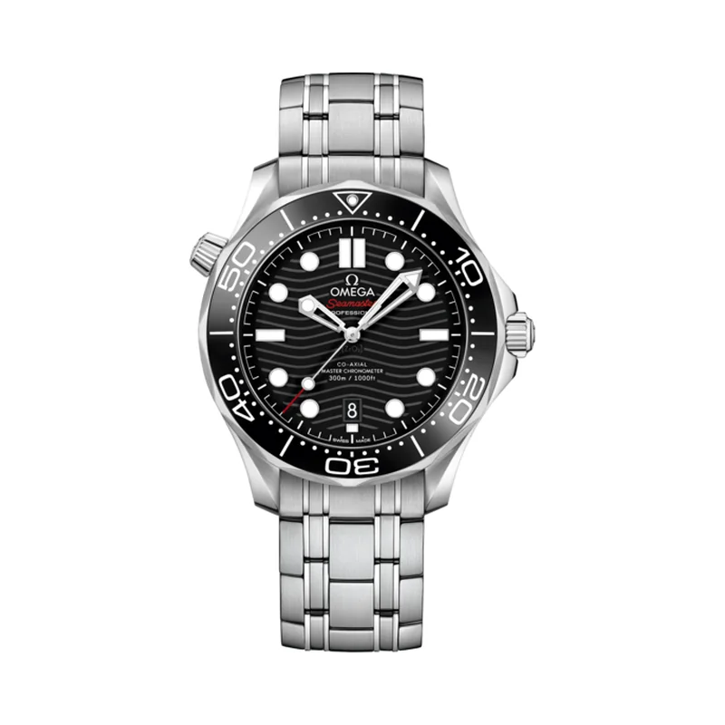

Encyclopedia / Omega / Seamaster Diver 300M

Current deal · verified Oct 19, 2026, 8:21 PM ET
$5,490 Retail $6,700
Save $1,210 (18%) · new · WatchMaxx
Ref. 210.30.42.20.03.001 (blue, steel bracelet) · In stock (per WatchMaxx)
Brand new from a grey-market dealer, with a 5-year WatchMaxx warranty rather than Omega's. Jomashop had the same blue ref at $5,750 (checked 8:23 PM ET). Prices change fast; check the store before you buy.
Price comparison: fixed-price listings
| Store | Condition | Box & papers | Asking price | Link | Checked |
|---|---|---|---|---|---|
| Watchfinder | pre-owned | Yes | $4,035 | View | Oct 19, 2026 |
| Chrono24 (Private Seller) | pre-owned | Yes | $4,590 | View | Oct 19, 2026 |
| WatchMaxx | new | Yes* | $5,490 | View | Oct 19, 2026 |
| Jomashop | new | Yes* | $5,750 | View | Oct 19, 2026 |
Fixed-price (buy-now) asking prices in USD for ref. 210.30.42.20.03.001, cheapest new and cheapest pre-owned with box and papers per store, sorted low to high and checked Oct 19, 2026 (ET). Buy-now listings only. Pre-owned listings are shown only when the listing states box and papers. * New from a grey-market dealer: comes boxed, but the warranty card may be the dealer's rather than the brand's. Chrono24 rows are individual third-party marketplace sellers. Prices change fast; confirm with the store.
What it really costs
| Market | Price | Source |
|---|---|---|
| Omega US retail | $6,700 (blue .03.001 and black .01.001, bracelet) | omegawatches.com |
| Grey-market new (blue) | $5,490 WatchMaxx · $5,750 Jomashop | watchmaxx.com / jomashop.com |
| Pre-owned (blue .03.001) | about $4,200 – $6,000 (median ~$5,000) | Chrono24 |
All prices in USD, checked Oct 19, 2026 (ET). Pre-owned ranges are the middle 80% of asking prices on the first Chrono24 results page for that ref (about 60 listings, used and some unworn), fixed-price listings only. Grey-market = brand-new from a non-authorized dealer.
Buying guide
Key references
| Ref. | What it is | US retail |
|---|---|---|
| 210.30.42.20.03.001 | Blue ceramic dial, blue ceramic bezel, steel bracelet | $6,700 |
| 210.30.42.20.01.001 | Black ceramic dial, black ceramic bezel, steel bracelet | $6,700 |
Which one I'd pick
Blue (.03.001) vs black (.01.001): same case, movement and $6,700 retail. The blue is the more 'Seamaster' look and was the one with the best verified grey-market price today. The black is the more understated choice.
Bracelet vs rubber: the bracelet is the default and holds resale best. Omega also sells rubber and NATO versions (from $6,900 on the Omega US site for other dial variants), so compare refs carefully.
What to check before you buy
- Box and papers: look for the Omega warranty card and Master Chronometer card. Grey-market new watches may ship with a dealer warranty instead of Omega's.
- Condition: the polished ceramic dial and bezel are scratch-resistant, but check the polished case flanks and bracelet clasp for wear on pre-owned pieces.
- Fakes and red flags: the Diver 300M is one of the most faked Omegas. Avoid listings far below the prices above, stock photos only, or sellers who won't show the caseback and card.
Alternatives worth a look
- Rolex Submariner: The benchmark diver, at nearly double the price and usually above retail pre-owned. (41 mm Oystersteel, Calibre 3230 (no-date) / 3235 (date), retail $10,050 (124060); $11,350 (126610LN))
- Tudor Black Bay 58: Slimmer 39 mm vintage-style diver for a lot less. (39 mm stainless steel, Calibre MT5400-U, retail From $4,975 (rubber); $5,225–$5,350 on bracelet)
- Omega Seamaster Planet Ocean 600M: Omega's bigger, tougher 600 m diver. (43.5 mm stainless steel, Calibre 8900, retail Discontinued ref.; current Planet Ocean models $8,600–$9,200 on Omega US)
History
Omega launched the Seamaster Professional Diver 300M in 1993. Two years later Pierce Brosnan wore one as James Bond in GoldenEye (1995), starting Omega's run as 007's watch.
For the model's 25th anniversary in 2018, Omega redesigned it completely: a 42 mm case, a ceramic bezel, a polished ceramic dial with the wave pattern brought back by laser engraving, the date moved to 6 o'clock and a conical helium escape valve.
Inside is the Master Chronometer Calibre 8800, certified to the METAS standard and resistant to magnetic fields above 15,000 gauss, with a 55-hour power reserve, visible through a sapphire caseback.
Pierce Brosnan wore a Seamaster Diver 300M as Bond in GoldenEye (1995), starting Omega's run as 007's watch.
Specifications
| Brand | Omega |
|---|---|
| Model | Seamaster Diver 300M |
| Key references | 210.30.42.20.03.001, 210.30.42.20.01.001 |
| Launch year | 1993 |
| Case | 42 mm stainless steel |
| Lug-to-lug | 49.9 mm |
| Thickness | 13.56 mm |
| Lug width | 20 mm |
| Crystal | Domed sapphire, anti-reflective both sides |
| Lume | White Super-LumiNova on hands and indexes |
| Dial | Polished ceramic with laser-engraved waves, date at 6 |
| Bracelet | Stainless steel |
| Magnetic resistance | Over 15,000 gauss (Master Chronometer) |
| Weight (approx.) | 194 g |
| Movement | Calibre 8800, automatic (Master Chronometer) |
| Power reserve | 55 hours |
| Water resistance | 300 m |
| Approx. US retail (Oct 2026) | $6,700 (steel bracelet; blue .03.001 or black .01.001) |
Specs from the brand's official product page for the main reference. Retail prices are list prices, not market value, and change often.
Highlights
- Laser-engraved wave dial
- Ceramic bezel
- Helium escape valve
FAQ
How much is the Omega Seamaster Diver 300M?
Omega's US retail is $6,700 on the steel bracelet for both the blue 210.30.42.20.03.001 and black 210.30.42.20.01.001 (checked Oct 19, 2026). New it was $5,490 at WatchMaxx, and pre-owned asking prices on Chrono24 mostly ran about $4,200 to $6,000.
What size is the Seamaster Diver 300M?
42 mm across, 49.9 mm lug-to-lug and 13.56 mm thick, with 20 mm lugs, per Omega.
Is the Seamaster 300M a James Bond watch?
Yes. Pierce Brosnan wore a Seamaster Diver 300M as Bond in GoldenEye (1995).
What movement is in the Seamaster Diver 300M?
The Omega Master Chronometer Calibre 8800, automatic, with a 55-hour power reserve and magnetic resistance above 15,000 gauss.
Is it cheaper to buy the Seamaster 300M grey market?
Today, yes. The blue model was $5,490 new at WatchMaxx versus $6,700 retail, about 18% less. The trade-off is that the warranty comes from the dealer, not Omega.
Want this watch for less?
Every week I hunt down genuine deals on watches like the Seamaster Diver 300M and send the best ones. Free, one email a week.
Get the free weekly issuePrices and availability last checked Oct 19, 2026. No affiliate links: I don't earn anything if you buy. Sources are listed in our research notes and linked above.